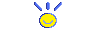

TOKI PONA | 19-02-2026

Toki Pona (The Language of Good) is a constructed language created by Sonja Lang in 2001.
It is a minimalist language with a focus on simplicity and clarity.
I have created a tool that allows you to type in Toki Pona and see the translation in English.